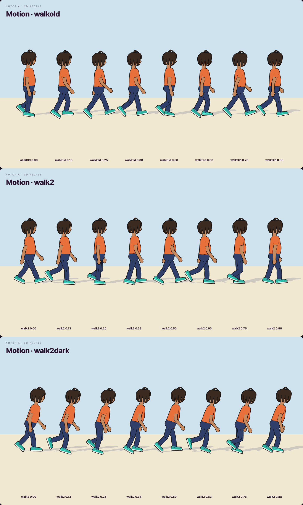
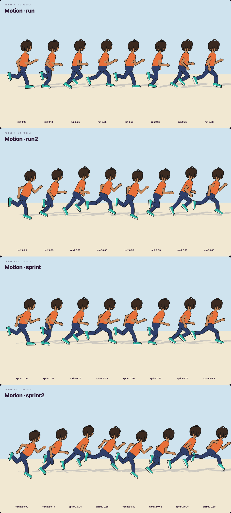
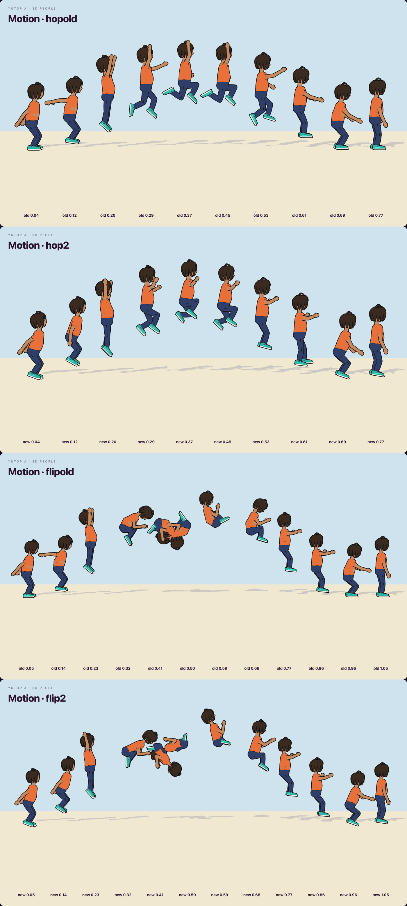
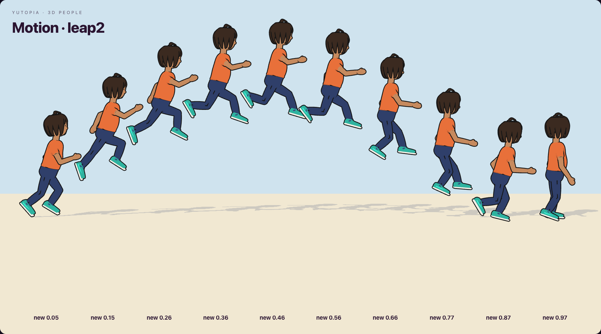
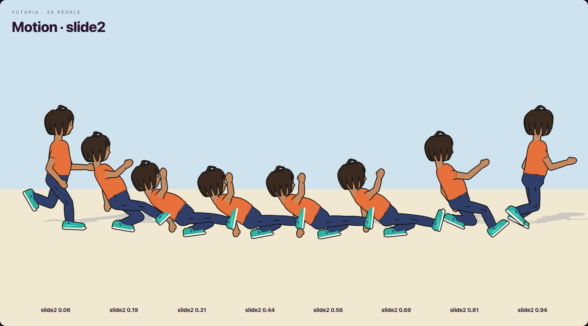

Animation Style Guide
Plan 58, phase 0: the direction, shown on four hero animations keyed again on today's body. Old beside new.
The two styles
KH3 where you play: running, jumping, Flowmotion, emotes, games. Alan Wake 2 where you live and where it's dark: standing, walking, the torch and the gun, being hurt.
| Kingdom Hearts 3 | Alan Wake 2 | |
|---|---|---|
| Timing | Fast in, a hold at the key, fast out | Even and continuous, small overlaps |
| Weight | Light, springy, up on the toes | Heavy, down in the heels, knees soft |
| Arcs | Big, readable from far away | Small, true to a real body |
| Silhouette | Clear in every key pose | Natural, closed in when cold or afraid |
| Head | Leads the move, looks where it goes | Checks around, looks at sounds and people |
| Secondary | Hair and clothes trail, then settle | Breath, small shifts, never fully still |
| Landings | A squash and a pop back up | A real absorb, by height |
The mood moves it. A tension dial (0 day, 1 the dark) leans everything toward Alan Wake 2: the walk shortens and lowers, the idle looks around, the run tightens. It rises at night, in the dark's fog, near the shadowed, after a hit, and with low vitals.
What changed, animation by animation
Standing AW, KH by day
- The weight on one leg, the other easy and a little out. It moves over every few seconds, with a small dip.
- Breath lifts the chest: slow by day, quicker in the dark.
- Never still: a slow wander through the hips, the arms and the head.
- Glances turn the eyes, head, neck and a little of the chest, then come back.
- In the dark: knees soft, shoulders in, looking round more, now and then over the shoulder.
Walking AW
- A heel strike with the toes up, a roll onto the flat foot, a push off the toes. The old walk was one sine wave per joint.
- The knee gives as the weight lands; the body dips there and rises over the passing foot.
- The pelvis turns with each step and drops on the swinging side; the chest turns against it.
- The arms swing from the shoulder, a beat behind the legs, the elbows trailing.
- In the dark: shorter steps, lower, leaning in, arms bent and close, the head checking round.
Running and sprinting KH
- Up on the balls of the feet, landing under the knee, not out ahead.
- The knee driven high, the heel to the seat.
- Arms pumping bent at about a right angle, a beat behind the legs.
- Leaning into the speed (a sprint most), chest proud, a springy bounce.
Feel, everywhere both
- Follow-through: the spine, head, arms and hands come after the move, a touch late, a touch past, then settle. Nothing snaps from pose to pose.
- The body stays upright: the hips' roll is taken back out of the legs.
The slide KH
- A baseball slide: the plant, the drop with the lead leg kicked out, then reclined from the hips.
- That leg along the ground with the toes up, the other folded under, the trailing hand skimming the ground, the other arm up, the head looking ahead.
- Out of it, a push off the folded leg back into the run.
Jumping KH
- A deep wind-up with the arms thrown back, then a full stretch off the toes, arms thrown up.
- Hang time at the top. The hop: both knees up, one higher, arms flung out. The flip: balled up tight.
- The legs reach down for the ground, arms up for balance; a squash that gives by how hard it lands.
- Running, the jump is a leap: a long stride through the air, leant forward. The flip is the jump in the air.
Old beside new





What today's body can't do yet (phase 1)
- The waist: the trunk is two rigid pieces. A spine bent forward or twisted opens them, and skin shows through a fitted top. The old run shows it on the back. Phase 0 takes the lean at the hips instead; phase 1's chest joint and proper skinning fix it.
- No toes, no fingers: no push-off through the toes, no fists, grips or pointing.
- Nothing hangs: hair and hems don't trail or settle yet.
- Feet on the ground: on slopes and stairs they still float or sink, until Jolt's rays place them.
Try it
/dev/move: the "new animations (plan 58)" box, and the "mood: day → the dark" slider. Walk with Alt, run, sprint with Shift, jump./dev/chars?anim=hero,idles,jumps2; filmstripswalk2,walk2dark,run2,sprint2,hop2,flip2(andwalkold,run,sprint,hopold,flipold).- The world is unchanged until you sign off.